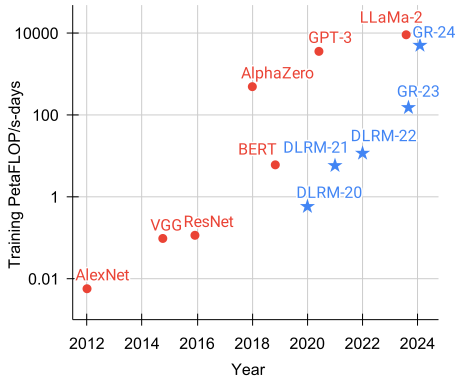
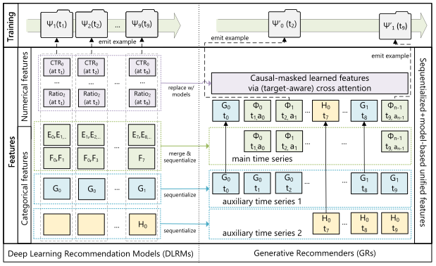
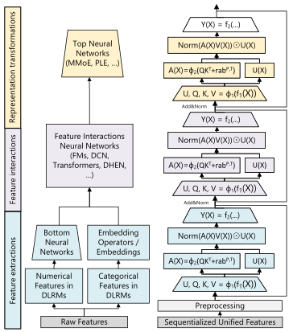
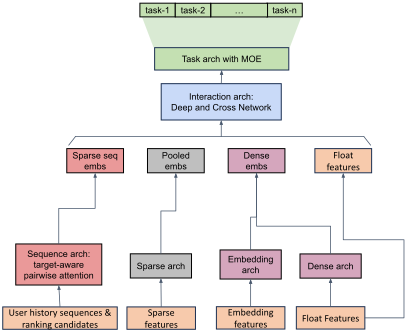
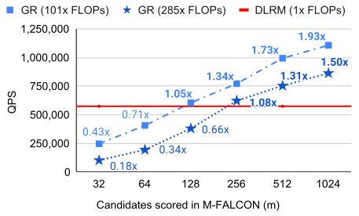
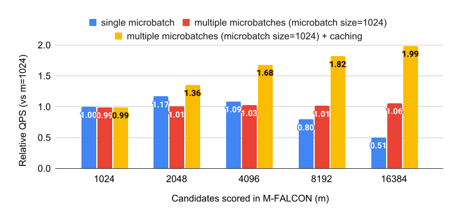

行动胜于语言：面向生成式推荐的万亿参数序列转导器
摘要
大规模推荐系统依赖高基数的异构特征，并且每天需要处理数百亿次用户行为。尽管使用数千个特征和海量数据进行训练， 工业界大多数深度学习推荐模型（DLRM）的效果仍无法随计算量扩展。 受 Transformer 在语言和视觉领域取得成功的启发，我们重新审视推荐系统的基本设计选择。我们将推荐问题重新表述为序列转导任务， 置于生成式建模框架（“生成式推荐器”）之下，并提出新架构 HSTU，专门面向 高基数、非平稳的流式推荐数据。 HSTU 在合成数据集和公开数据集上相较基线的 NDCG 提升最高达 65.8%，在长度为 8192 的序列上，其速度是基于 FlashAttention2 的 Transformer 的 5.3x 至 15.2x。 基于 HSTU 的生成式推荐器拥有 1.5 万亿参数，在在线 A/B 测试中将指标提升了 12.4%，并已部署于拥有数十亿用户的大型互联网平台的多个业务场景。更重要的是， 实证结果表明，生成式推荐器的模型质量随训练计算量呈幂律增长，覆盖三个数量级， 达到 GPT-3/LLaMa-2 的规模， 这减少了未来模型开发所需的碳足迹，并进一步为推荐领域首批基础模型铺平了道路。
1 引言

推荐系统是在线内容平台和电子商务的核心，每天为数十亿用户提供个性化体验，发挥着关键作用。 推荐领域最先进的方法一直基于深度学习推荐模型（DLRM） (Mudigere et al., 2022)，这一趋势已延续近十年 (Covington et al., 2016; Cheng et al., 2016; Zhou et al., 2018; Tang et al., 2020; Wang et al., 2021; Xia et al., 2023)。 DLRM 的特点是使用异构特征，例如计数器和比率等数值特征、嵌入，以及创作者 ID、用户 ID 等类别特征。由于每分钟都有新内容和新商品加入，特征空间 的基数极高，通常达到数十亿量级 (Eksombatchai et al., 2018)。为利用数以万计的此类特征，DLRM 使用各种神经网络来组合特征、变换中间表示，并形成最终输出。
尽管使用了大量人工设计的特征并在海量数据上训练， 工业界大多数 DLRM 的效果随计算量扩展的能力仍然较差 (Zhao et al., 2023)。这一局限值得关注，且其原因仍未得到解答。
受 Transformer 在语言和视觉领域取得成功的启发，我们重新审视现代推荐系统的基本设计选择。我们发现， 要在数十亿用户规模下采用其他问题表述方式，必须克服三个挑战。首先，推荐系统中的特征缺乏显式结构。虽然已有研究在小规模设置下探索序列化表述（详细讨论见 Appendix B）， 高基数 ID、交叉特征、计数器、比率等异构特征在工业级 DLRM 中发挥着关键作用 (Mudigere et al., 2022)。其次，推荐系统使用持续变化的十亿级词表。与语言领域 100K 规模的静态词表 (Brown et al., 2020) 相比，十亿级动态词表给训练带来了挑战；而由于需要以目标感知的方式考虑数以万计的候选项，推理成本也很高 (Zhou et al., 2018; Wang et al., 2020)。最后，计算成本是实现大规模序列模型的主要瓶颈。GPT-3 使用数千块 GPU，在 1-2 个月内总计训练了 300B 个 token (Brown et al., 2020)。这一规模看似惊人，但与用户行为的规模相比则并非如此。最大的互联网平台服务于数十亿日活跃用户，这些用户每天与数十亿条帖子、图片和视频互动。用户序列长度可达 (Chang et al., 2023)。 因此，推荐系统每天需要处理的 token 数量，比语言模型在 1-2 个月内处理的数量还要高出几个数量级。
本文将用户行为视为生成式建模中的一种新模态。我们的核心见解是：a) 在恰当的新特征空间下，工业级推荐器中的核心排序和召回任务可以表述为生成式建模问题；b) 这一范式使我们能够系统地利用特征、训练和推理中的冗余来提高效率。 借助这一新的表述方式，我们部署了计算复杂度比此前最先进模型高出三个数量级的模型，同时将核心业务指标提升了 12.4%，如 Figure 1 所示。
我们的贡献如下。我们首先提出生成式推荐器（GR），这一替代 DLRM 的新范式详见 Section 2。我们将 DLRM 中的异构特征空间序列化并统一起来；当序列长度趋于无穷时，新方法能够逼近完整的 DLRM 特征空间。这使我们能够在 GR 中将主要推荐问题——排序与召回——重新表述为纯序列转导任务。进一步而言，模型训练可以以序列化、生成式的方式进行，从而在计算量相同的条件下，使用多出几个数量级的数据进行训练。
接下来，我们解决贯穿训练与推理过程的计算成本挑战。我们提出一种新的序列转导架构——层次化序列转导单元（HSTU）。HSTU 针对大规模非平稳词表修改注意力机制，并利用推荐数据集的特征，实现 5.3x 至15.2x 的加速，比较对象为长度 8192 序列上基于 FlashAttention2 的 Transformer。此外，我们提出新算法 M-FALCON，通过微批处理充分分摊计算成本（Section 3.4）；我们能够部署复杂度高出285x的 GR 模型，同时实现 1.50x-2.99x 的加速，而所有这些都在与传统 DLRM 相同的推理预算下实现。
2 将推荐表述为序列转导任务：从 DLRM 到 GR
2.1 统一 DLRM 中的异构特征空间

现代 DLRM 模型通常使用大量类别（“稀疏”）特征和数值（“稠密”）特征进行训练。 在 GR 中，我们将这些特征整合并编码为单一的统一时间序列，如 Figure 2 所示。
类别（“稀疏”）特征。此类特征的例子 包括用户点赞过的物品、用户关注的某一类别（例如户外）中的创作者、 用户使用的语言、用户加入的社区、请求发起的城市等。我们按如下方式将这些特征序列化。首先选择最长的时间序列作为主时间序列，通常由表示用户曾互动过的物品的特征合并而成。其余特征通常是随时间缓慢变化的时间序列，例如人口统计信息或关注的创作者。 我们仅保留每个连续片段中最早的条目，对这些时间序列进行压缩，随后将结果合并到主时间序列中。由于这些时间序列变化非常缓慢，这一方法不会显著增加整体序列长度。
数值（“稠密”）特征。此类特征包括带权重和衰减的计数器、比率等。例如，一个特征可以表示用户过去对某一主题物品的点击率（CTR）。与类别特征相比，这些特征的变化频繁得多，甚至每次（用户，物品）交互都会变化。因此，从计算和存储角度看，将这些特征完全序列化是不可行的。不过， 一个重要观察是， 我们进行这些聚合所依据的类别特征（例如物品主题、位置），已经在 GR 中被序列化并编码。 因此，只要序列转导架构具有足够强的表达能力，并且结合目标感知的表述方式 (Zhou et al., 2018)，就能够有效捕捉数值特征， 随着 GR 的整体序列长度和计算量增加，我们便可移除显式数值特征。
2.2 将排序和召回重新表述为序列转导任务
给定按时间排序的 个 token （），以及观察到这些 token 的时间 ，序列转导任务将此输入序列映射为输出 token （），其中 表示 未定义。
我们用 （）表示系统提供给用户的内容，例如图片或视频。 由于新内容不断产生， 和 是非平稳的。对于 ，用户可以作出某种行为 （例如点赞、跳过、完整观看视频并分享），其中 。我们用 表示用户互动过的内容总数。
在因果自回归设置下，标准排序和召回任务便可定义为序列转导任务（Table 1）。 我们作出以下观察：
| Task | Specification (Inputs / Outputs) | |
|---|---|---|
| Ranking | s | |
| s | ||
| Retrieval | s | |
| s | ||
| ( if is positive, otherwise ) | ||
召回。在推荐系统的召回阶段，我们学习分布 ，其定义域为 ，其中 为用户在 token 处的表示。典型目标是选择 以最大化某种奖励。这与标准自回归设置有两点不同。首先， 的监督信号 不一定是 ，因为用户可能对 作出负反馈。其次， 未定义的情况是： 表示人口统计信息等与互动无关的类别特征。
排序。GR 中的排序任务面临独特挑战，因为工业推荐系统通常需要“目标感知”的表述方式。在这种设置下，目标 与历史特征之间的“交互” 需要尽早发生，而标准自回归设置中的“交互”发生得较晚（例如编码器输出后的 softmax），因此无法满足这一要求。我们通过将物品与行为交错排列来解决这一问题，如 Table 1 所示，这使排序任务可以表述为 （尚未加入类别特征）。 实际中，我们使用一个小型神经网络，将 处的输出 转换为多任务预测。关键在于，这使我们能够在一次前向过程中，对所有 次互动应用目标感知的交叉注意力。
2.3 生成式训练
工业推荐器通常采用流式训练设置，每个样本 在可用时依次被处理。 在这种设置下，Transformer (Vaswani et al., 2017) 等基于自注意力的序列转导架构，其总计算需求随下式增长：，其中 为用户 的 token 数量， 为嵌入维度。 括号中的第一项 来自自注意力，假设其扩展因子为 ，因为大多数次二次复杂度算法都需要在效果上作出权衡，而且实际运行时间不如二次复杂度算法 (Dao et al., 2022)。第二项来自逐点 MLP 层，其隐藏层大小为 。令 ，则整体时间复杂度简化为 ，这一成本对推荐场景而言难以承受。
为解决长序列上的序列转导模型难以扩展训练的问题，我们将传统曝光级训练改为生成式训练，使计算复杂度降低 倍，如图 2 上部所示。这样，编码器的成本便能在多个目标之间分摊。具体而言，当对第 个用户采用 的采样率时，总训练成本随下式增长： ；其复杂度可降至 ，方法是将 设为 。在工业级系统中，实现这种采样的一种方式是在用户请求或会话结束时产生训练样本，从而得到 。
3 面向生成式推荐的高性能自注意力编码器
为了使 GR 能够扩展到具有 大规模非平稳词表的工业级推荐系统， 我们接下来介绍一种新的 编码器设计， 层次化序列转导单元（HSTU）。 HSTU 由 一组相同的层堆叠而成， 各层通过残差连接相连 (He et al., 2015)。 每层包含三个 子层：逐点投影（公式 1）、空间聚合（公式 2）和逐点变换（公式 3）：
| (1) |
| (2) |
| (3) |
其中 表示一个 MLP；我们使用单个线性层 来实现 和 ，以降低计算复杂度，并通过融合内核进一步批量计算查询 、键 、值 和门控权重 ； 和 表示非线性函数，两者均采用 SiLU (Elfwing et al., 2017)；Norm 为层归一化；而 表示相对注意力偏置 (Raffel et al., 2020)，其中结合了位置（）和时间（）信息。 本文使用的完整符号说明见 Table 9。

HSTU 的编码器设计使得 DLRM 中的异构 模块能够由单一的模块化结构替代。我们观察到，DLRM 实际上包含三个主要阶段： 特征提取、特征交互和 表示变换。特征提取获取类别特征的池化嵌入表示。其最先进的形式可以归纳为成对注意力和目标感知池化 (Zhou et al., 2018)，这些操作能够由 HSTU 层实现。
特征交互是 DLRM 中最关键的部分。常用方法 包括因子分解机及其神经网络变体 (Rendle, 2010; Guo et al., 2017; Xiao et al., 2017)、高阶特征交互 (Wang et al., 2021) 等。 HSTU 通过 ，使经过注意力池化的特征直接与其他特征“交互”，从而替代显式特征交互模块。这一设计源于学习得到的 MLP 难以逼近点积这一问题 (Rendle et al., 2020; Zhai et al., 2023a)。由于 上应用了 SiLU， 也可以解释为 SwiGLU 的一种变体 (Shazeer, 2020)。
表示变换通常通过混合专家（MoE）及路由完成，以处理多样化的异构人群。一个关键思路 是为不同用户专门设置子网络，以进行条件计算 (Ma et al., 2018; Tang et al., 2020)。HSTU 中的逐元素点积实际上能够实现 MoE 中的门控操作，仅相差一个归一化因子。
3.1 逐点聚合注意力
HSTU 采用新的逐点聚合（归一化）注意力机制；相比之下，softmax 注意力在整个序列上计算归一化因子。 这一设计由两个因素驱动。首先， 与目标相关的历史数据点数量，是表征用户偏好强度的重要特征，而 softmax 归一化后难以捕捉这一信息。这一点很关键，因为我们既要预测互动强度（例如在某一物品上花费的时间），也要预测物品的相对顺序，例如预测一种排序， 以最大化 AUC。其次，尽管 softmax 激活在设计上对噪声具有稳健性，但它不太适合流式设置中的非平稳词表。
所提出的逐点聚合注意力机制见 Equation 2。 为稳定训练，需要在逐点池化之后进行层归一化。 理解这一设计的一种方式是使用遵循狄利克雷过程的合成数据，该过程在非平稳词表上生成流式数据（详见附录 C）。在这一设置下，softmax 注意力与逐点注意力之间的差距可达 44.7%， 如 Table 2 所示。
| Architecture | HR@10 | HR@50 |
|---|---|---|
| Transformers | .0442 | .2025 |
| HSTU (-, Softmax) | .0617 | .2496 |
| HSTU (-) | .0893 | .3170 |
3.2 利用稀疏性并通过算法增强稀疏性
在推荐系统中，用户历史序列长度通常呈偏斜分布，导致输入序列具有稀疏性，在极长序列设置下尤其如此。可以利用这种稀疏性显著提高编码器效率。 为此，我们开发了高效的 GPU 注意力内核，以类似于 (Rabe & Staats, 2021; Dao et al., 2022) 的方式融合连续的 GEMM， 但采用完全不规则长度的注意力计算。这实际上将 注意力计算转换为一组大小不一的分组 GEMM（Appendix G）。 因此，HSTU 中的自注意力受到内存带宽限制，其内存访问量 按 扩展，其中 是 样本 的序列长度， 为注意力维度， 为寄存器大小。仅这一方法 就带来了 2-5x 的吞吐量提升，详见 Section 4.2。
我们进一步从算法层面，通过随机长度（SL）增强用户历史序列的稀疏性。推荐场景中用户历史序列的一个关键特征是：用户行为在时间上具有重复性， 因为用户行为会在整个交互历史中的多个尺度上反复出现。 这使我们能够在不损害模型质量的前提下，人为提高稀疏性， 从而显著降低按 扩展的编码器成本。
我们可以将用户 的历史表示为序列 ，其中 为用户互动过的内容数量。令 。 令 为长度为 的子序列，由原始序列 构造而来。 按如下方式选择输入序列：
| (4) |
这将与注意力相关的复杂度降至 ，其中 。有关子序列选择的更详细讨论见 Section F.1。 我们指出，将 SL 应用于训练可得到成本效益较高的系统设计，因为训练通常比推理涉及显著更高的计算成本。
Table 3 展示了稀疏性（见 Appendix F）随不同序列长度和 值的变化， 采用的是具有 30 天用户 历史的代表性工业级配置。那些使模型质量退化可忽略不计的设置 以蓝色加下划线标出。 标记为 “” 的行表示未应用 SL 的基础稀疏性情况。较小的 适用于较长序列，直至我们测试过的最长序列 长度 8,192。
| Alpha () | Max Sequence Lengths | |||
|---|---|---|---|---|
| 1,024 | 2,048 | 4,096 | 8,192 | |
| 1.6 | 71.5% | 76.1% | 80.5% | 84.4% |
| 1.7 | 56.1% | 63.6% | 69.8% | 75.6% |
| 1.8 | 40.2% | 45.3% | 54.1% | 66.4% |
| 1.9 | 17.2% | 21.0% | 36.3% | 64.1% |
| 2.0 | 3.1% | 6.6% | 29.1% | 64.1% |
3.3 最小化激活内存使用量
在推荐系统中，使用较大的批大小对于 训练吞吐量 (Mudigere et al., 2022) 和 模型质量 (Yang et al., 2020; Chen et al., 2020; Zhai et al., 2023a) 都十分关键。 因此，激活内存使用量成为规模扩展的主要瓶颈； 相比之下，大语言模型通常以较小批大小训练，内存占用主要来自模型参数。
与 Transformer 相比，HSTU 采用简化且充分融合的设计，显著减少激活内存使用量。首先，HSTU 将注意力之外的线性层数量从六个减少到两个， 这与近期通过逐元素门控减少 MLP 计算的工作一致 (Hua et al., 2022; Gu et al., 2022)。 其次，HSTU 将多项计算大幅融合为单个算子，包括 （见 Equation 1），以及层归一化、可选的 dropout 和输出 MLP， 后者见 Equation 3。 这种简化设计 将激活内存使用量降至 每层，使用 bfloat16 精度。
3.4 通过成本分摊扩展推理
我们要解决的最后一个挑战，是推荐系统在线服务时需要处理的大量候选项。 我们重点讨论排序，因为在召回中，编码器成本可以被完全分摊；对于 MIPS，已有利用量化、哈希或分区的高效算法 (Jegou et al., 2011; Shrivastava & Li, 2014; Li et al., 2002; Zhai et al., 2011)，对于非 MIPS 情况，也可以使用束搜索或层次化召回 (Zhuo et al., 2020; Zhai et al., 2023a)。
排序阶段的候选项数量可达数万 (Covington et al., 2016; Wang et al., 2020)。 我们提出 M-FALCON 算法（Microbatched-Fast Attention Leveraging Cacheable OperatioNs，利用可缓存操作的微批次快速注意力）， 用于对 个候选项执行推理，输入序列长度为 。
在一次前向过程中，M-FALCON 并行处理 个候选项，方法是修改注意力掩码与 偏置，使 个候选项执行完全相同的注意力操作。这将交叉注意力的成本从 降至 ，条件是 相对于 可视为一个小常数。我们还可以将全部 个候选项划分为 个大小为 的微批次，以利用编码器级 KV 缓存 (Pope et al., 2022)：既可以跨前向过程复用以降低成本，也可以跨请求复用以最小化尾部延迟（更详细的讨论见 Appendix H）。
总体而言，M-FALCON 使模型复杂度能够随传统 DLRM 排序阶段的候选项数量 线性扩展；我们成功应用了复杂度高出285x 的目标感知交叉注意力模型，并实现 1.5x-3x 的吞吐量，同时保持典型排序配置下的推理预算不变， 该配置详见 Section 4.3。
4 实验
4.1 验证 HSTU 编码器的归纳假设
| Method | HR@10 | HR@50 | HR@200 | NDCG@10 | NDCG@200 | |
|---|---|---|---|---|---|---|
| ML-1M | SASRec (2023) | .2853 | .5474 | .7528 | .1603 | .2498 |
| HSTU | .3097 (+8.6%) | .5754 (+5.1%) | .7716 (+2.5%) | .1720 (+7.3%) | .2606 (+4.3%) | |
| HSTU-large | .3294 (+15.5%) | .5935 (+8.4%) | .7839 (+4.1%) | .1893 (+18.1%) | .2771 (+10.9%) | |
| ML-20M | SASRec (2023) | .2906 | .5499 | .7655 | .1621 | .2521 |
| HSTU | .3252 (+11.9%) | .5885 (+7.0%) | .7943 (+3.8%) | .1878 (+15.9%) | .2774 (+10.0%) | |
| HSTU-large | .3567 (+22.8%) | .6149 (+11.8%) | .8076 (+5.5%) | .2106 (+30.0%) | .2971 (+17.9%) | |
| Books | SASRec (2023) | .0292 | .0729 | .1400 | .0156 | .0350 |
| HSTU | .0404 (+38.4%) | .0943 (+29.5%) | .1710 (+22.1%) | .0219 (+40.6%) | .0450 (+28.6%) | |
| HSTU-large | .0469 (+60.6%) | .1066 (+46.2%) | .1876 (+33.9%) | .0257 (+65.8%) | .0508 (+45.1%) |
4.1.1 传统序列推荐设置
我们首先在两个常用推荐数据集 MovieLens 和 Amazon Reviews 上评估 HSTU 的性能。我们沿用文献中的序列推荐设置，包括全量打乱和多轮训练。基线采用 SASRec，一种先进的 Transformer 实现 (Kang & McAuley, 2018) 11 1 其他基线的结果见 Appendix D。。与近期工作 (Dallmann et al., 2021; Zhai et al., 2023a) 一致，我们报告在整个物品库上计算的 Hit Rate@K 和 NDCG@K。
结果见 Table 4。“SASRec (2023)”表示 (Zhai et al., 2023a) 报告的最佳 SASRec 训练方案。标为 “HSTU”的行使用与 SASRec 相同的配置（层数、注意力头数等均相同）。“HSTU-large”表示更大的 HSTU 编码器（层数为 4x，注意力头数为 2x）。结果表明，a) 针对推荐任务优化设计的 HSTU， 在相同配置下显著优于基线；b) 扩大规模后，HSTU 的性能进一步提高。
需要注意的是，此处的评估方法与工业规模设置存在显著差异，因为全量打乱和多轮训练通常不适用于工业界采用的流式设置 (Liu et al., 2022)。
4.1.2 工业规模流式设置
接下来，我们使用工业规模数据集，在 流式 设置下比较 HSTU、HSTU 的消融变体和 Transformer 的性能。本节后续内容均报告 排序任务的归一化熵（NE） (He et al., 2014)。我们在 100B 个样本（等效 DLRM 样本）上训练模型， 每个训练任务使用 64-256 块 H100。由于排序采用多任务设置，我们报告主要互动事件（“E-Task”）和主要消费事件（“C-Task”）的结果。 在我们的 场景中，NE 降低 0.001 被视为显著改善，因为这通常会为数十亿用户带来 .5% 的核心业务指标提升。对于召回，由于其设置与语言建模类似，我们报告对数困惑度。 受资源限制，我们将编码器参数固定在较小规模设置（排序为 、、，召回为 、、），并对其他超参数进行网格搜索。
| Architecture | Retrieval | Ranking (NE) | |
|---|---|---|---|
| log pplx. | E-Task | C-Task | |
| Transformers | 4.069 | NaN | NaN |
| HSTU (-, Softmax) | 4.024 | .5067 | .7931 |
| HSTU (-) | 4.021 | .4980 | .7860 |
| Transformer++ | 4.015 | .4945 | .7822 |
| HSTU (original rab) | 4.029 | .4941 | .7817 |
| HSTU | 3.978 | .4937 | .7805 |
结果见 Table 5。 首先，HSTU 显著优于 Transformer，尤其是在排序任务中，这可能得益于逐点注意力和改进的相对注意力偏置。 其次，HSTU 消融变体与完整 HSTU 之间的差距验证了我们设计的有效性。出于训练稳定性的考虑，基于 Softmax 的 HSTU 和 Transformer 的最优学习率相比其余方法约需降低 10x。即使使用较低学习率和前置归一化残差 连接 (Xiong et al., 2020)，我们仍频繁遇到标准 Transformer 在排序任务中的损失爆炸。 最后，HSTU 也优于 LLM 中常用的 Transformer 变体 Transformer++ (Touvron et al., 2023a)，后者采用了 RoPE (Su et al., 2023)、SwiGLU 等技术。 总体而言，在这一较小规模设置下， HSTU 在实际运行速度快 1.5x-2x、HBM 用量减少 50% 的同时，还取得了更好的效果。
4.2 编码器效率
随机长度。 Figure 4 和 Figure 5 (a) 展示了随机长度（SL）对模型指标的影响。当 时，长度为 的序列在大多数情况下会被转换为长度为 的序列，即移除超过 80% 的 token。即使稀疏率提高到 64%-84%，主要任务的 NE 退化也没有超过 0.002（0.2%）。 这一证据表明，对于合适的 ，SL 不会损害模型质量，并能够通过 较高稀疏度降低训练成本。 我们还在 Section F.3 中验证了 SL 显著优于现有长度外推技术。
编码器效率。 Figure 5 比较了 HSTU 与 Transformer 编码器在训练和推理设置下的效率。 对于 Transformer，我们使用先进的 FlashAttention-2 (Dao, 2023) 实现。 我们考虑从 1,024 到 8,192 的序列长度，并在训练时采用 随机长度（SL）。 评估中，我们为 HSTU 和 Transformer 使用相同配置（、、），并移除相对注意力偏置， 因为 Section 4.1.2 已表明，即使没有 ，HSTU 仍优于 Transformer。我们以 bfloat16 精度，在 NVIDIA H100 GPU 上比较编码器级性能。 总体而言，HSTU 在训练和推理中的效率分别最高达到 Transformer 的 15.2x 和 5.6x。
此外，第 3.3 节所述的激活内存占用下降，使我们能够使用 HSTU 构建深度超过 Transformer 2x 的网络。
4.3 工业规模流式设置下生成式推荐器与 DLRM 的比较
最后，我们比较 GR 与先进 DLRM 基线 在工业规模流式设置下的端到端性能。我们的 GR 实现采用 生产环境中的典型配置，而 DLRM 设置则凝聚了 数百人多年迭代的成果。由于推荐系统的召回阶段会使用多个候选生成器，我们同时报告新增 GR 召回源（“add source”）以及替换现有主要 DLRM 召回源（“replace source”）的在线结果。 Table 6 和 Table 7 表明，GR 不仅在线下显著优于 DLRM，也在 A/B 测试中带来了 12.4% 的收益。
| Methods | Offline HR@K | Online metrics | ||
|---|---|---|---|---|
| K=100 | K=500 | E-Task | C-Task | |
| DLRM | 29.0% | 55.5% | +0% | +0% |
| DLRM (abl. features) | 28.3% | 54.3% | – | |
| GR (content-based) | 11.6% | 18.8% | – | |
| GR (interactions only) | 35.6% | 61.7% | – | |
| GR (new source) | 36.9% | 62.4% | +6.2% | +5.0% |
| GR (replace source) | +5.1% | +1.9% | ||
| Methods | Offline NEs | Online metrics | ||
|---|---|---|---|---|
| E-Task | C-Task | E-Task | C-Task | |
| DLRM | .4982 | .7842 | +0% | +0% |
| DLRM (DIN+DCN) | .5053 | .7899 | – | – |
| DLRM (abl. features) | .5053 | .7925 | – | – |
| GR (interactions only) | .4851 | .7903 | – | – |
| GR | .4845 | .7645 | +12.4% | +4.4% |
如 Section 2 所述，GR 基于原始类别型互动特征构建， 而 DLRM 通常使用数量显著更多的特征进行训练，其中大部分 是从原始信号中人工构造的。 如果将 GR 使用的同一组特征提供给 DLRM（“DLRM (abl. features)”），DLRM 的性能会显著下降。这表明，GR 能够通过其架构和统一特征空间有效捕获这些特征。
我们进一步验证 Section 2.2 中的 GR 表述方式， 将其与仅考虑用户交互过的物品的传统序列推荐设置 (Kang & McAuley, 2018)（“GR (interactions only)”）进行比较。后者的结果明显更差，其排序变体在主要消费任务的 NE 上比 GR 差 2.6%。
考虑到基于内容的方法（包括语言模型）的流行，我们还加入了一个仅使用内容特征的 GR 基线（“GR (content-based)”）。内容基线与 DLRM/GR 之间的显著性能差距，凸显了高基数 用户行为的重要性。

最后，我们在 Figure 6 中比较 GR 与生产 DLRM 的效率。 尽管 GR 模型的计算复杂度高出 285x， 我们实现了 1.50x/2.99x 更高的 QPS，分别对应对 1024/16384 个候选打分的设置， 这得益于 HSTU 和新型 M-FALCON 算法，详见 Section 3.4。
4.3.1 推荐系统的缩放定律
众所周知，在大规模工业设置下，DLRM 的效果会在一定计算量和参数规模下趋于饱和 (Zhao et al., 2023)。 我们比较 GR 与 DLRM 的可扩展性，以更好地理解这一现象。
由于特征交互层对 DLRM 的性能至关重要 (Mudigere et al., 2022)，我们尝试了 Transformer (Vaswani et al., 2017)、DHEN (Zhang et al., 2022)，以及生产环境中使用的 DCN (Wang et al., 2021) 变体（加入残差连接 (He et al., 2015)），以扩大排序设置中的 DLRM 基线规模。对于召回基线，由于其采用残差结构，我们扩大了隐藏层大小、嵌入维度和层数。对于基于 HSTU 的生成式推荐器（GR），我们通过调整 HSTU 的超参数扩大模型规模，包括残差层数、序列长度、嵌入维度、注意力头数等。对于召回，我们还调整了负例数量。
结果见 Figure 7。 在低计算量设置下，DLRM 可能因人工特征而优于 GR，这印证了特征工程在传统 DLRM 中的重要性。 然而，GR 在 FLOPs 方面表现出显著更好的可扩展性， 而 DLRM 的性能趋于平台期，与既有研究的发现一致。我们还观察到，GR 在嵌入参数和非嵌入参数方面均具有更好的可扩展性，能够扩展到 1.5 trillion 参数模型，而 DLRM 的性能在约 200 billion 参数时便趋于饱和。
最后，在采用合适超参数时，我们的所有主要指标，包括召回的 Hit Rate@100 和 Hit Rate@500，以及排序的 NE，都在实验中随所用计算量呈幂律变化。我们在三个数量级的范围内观察到了这一现象，直至能够测试的最大模型（序列长度 8,192、嵌入维度 1,024、24 层 HSTU）。此时，我们使用的总计算量（由于采用标准流式训练设置，按 365 天归一化）已接近 GPT-3 (Brown et al., 2020) 和 LLaMa-2 (Touvron et al., 2023b) 的总训练计算量，如 Figure 1 所示。在合理范围内，相比投入的总训练计算量，具体模型超参数的作用较小。与语言建模 (Kaplan et al., 2020) 相比，序列长度在 GR 中起着明显更重要的作用，因此应当将序列长度与其他参数 同步扩大。这或许是所提方法最重要的优势，因为我们首次表明，LLM 的缩放定律也可能适用于大规模推荐系统。
5 相关工作
既有序列推荐器工作将用户交互简化为物品上的单一同质序列 (Hidasi et al., 2016; Kang & McAuley, 2018)。 序列方法在工业规模中的应用主要是成对注意力 (Zhou et al., 2018)，或作为 DLRM 组成部分的序列编码器 (Chen et al., 2019; Xia et al., 2023)。已有研究探索以多阶段注意力替代自注意力， 以提高效率 (Chang et al., 2023)。将 ID 表示为 token 序列的生成式方法已在召回任务中得到探索 (Zhuo et al., 2020)。我们在 Section B.1 中更全面地讨论了既有工作。
高效注意力一直是重要研究方向， 原因在于自注意力具有 的复杂度增长，代表性工作包括分解式注意力 (Child et al., 2019)、低秩近似 (Katharopoulos et al., 2020)， 等等。近期，已有研究探索了序列转导设置的其他表述方式 (Gu et al., 2022; Hua et al., 2022)。其中，HSTU 的逐元素门控设计受到 FLASH (Hua et al., 2022) 的启发。近期感知硬件的表述方式被证明能够显著降低内存用量 (Rabe & Staats, 2021; Korthikanti et al., 2022; Zhai et al., 2023b)，并明显改善实际运行时间 (Dao et al., 2022)。 长度外推使在较短序列上训练的模型能够泛化，但多数工作侧重于微调或改进偏置机制 (Press et al., 2022)。相比之下，我们受到在深度维度引入随机性的工作 (Huang et al., 2016) 启发，在长度维度引入随机性。
对大语言模型（LLM）的关注催生了一系列工作，将各种推荐任务 建模为基于预训练 LLM 的上下文学习 (Sileo et al., 2022)、指令微调 (Bao et al., 2023) 或迁移学习 (Li et al., 2023)。 LLM 中蕴含的世界知识能够迁移到下游任务 (Cui et al., 2022)，改善零样本或少样本情况下的推荐。用户行为序列的文本表示也在中等规模数据集上展现出良好的规模扩展特性 (Shin et al., 2023)。 大多数将 LLM 用于推荐的研究 都集中在 数据稀缺的场景；在大规模设置下，这些方法尚未在 MovieLens 上超越协同过滤 (Hou et al., 2024)。
6 结论
我们提出了生成式推荐器（GR）这一新范式，将排序和召回表述为序列转导任务，从而能够以生成式方式进行训练。 这一范式得益于新颖的 HSTU 编码器设计，其速度可达到最先进 Transformer 的 5.3x-15.2x， 这一比较采用长度为 8192 的序列，同时也得益于 M-FALCON 等新的训练和推理算法。 借助 GR，我们部署了 复杂度高出285x、但推理计算量更少的模型。GR 和 HSTU 在生产环境中带来了 12.4% 的指标提升， 并展现出优于传统 DLRM 的规模扩展表现。 我们的结果印证了，用户行为是生成式建模中尚未得到充分探索的一种模态， 也呼应了本文标题：“行动胜于语言”。
本文对特征进行了大幅简化， 通过支持跨领域使用统一特征空间， 为推荐、搜索和广告领域的首批基础模型铺平了道路。GR 的全序列化设置也使推荐能够被表述为端到端的生成式任务。这两点都使推荐系统能够更全面地帮助用户。
影响声明
我们认为，本文工作具有广泛的积极意义。减少推荐、搜索和广告系统对大量异构特征的依赖，能够在改善用户体验的同时，使这些系统更加注重隐私保护。 通过全序列化表述，使推荐系统能够将用户的长期结果归因于短期决策，可以减少互联网上不符合用户长期目标的内容（包括标题党和虚假新闻），并使平台的激励机制更好地与用户价值保持一致。最后，基础模型和缩放定律的应用有助于减少推荐、搜索及相关场景所需的模型研发产生的碳足迹。
致谢
本项工作凝聚了数百人的共同努力，离不开以下贡献者的工作（按字母顺序排列）： Adnan Akhundov, Bugra Akyildiz, Shabab Ayub, Alex Bao, Renqin Cai, Jennifer Cao, Guoqiang Jerry Chen, Lei Chen, Sean Chen, Xianjie Chen, Huihui Cheng, Weiwei Chu, Ted Cui, Shiyan Deng, Nimit Desai, Fei Ding, Francois Fagan, Lu Fang, Liang Guo, Liz Guo, Jeevan Gyawali, Yuchen Hao, Daisy Shi He, Samuel Hsia, Jie Hua, Yanzun Huang, Hongyi Jia, Rui Jian, Jian Jin, Rahul Kindi, Changkyu Kim, Yejin Lee, Fu Li, Hong Li, Shen Li, Wei Li, Zhijing Li, Xueting Liao, Emma Lin, Hao Lin, Jingzhou Liu, Xingyu Liu, Kai Londenberg, Liang Luo, Linjian Ma, Matt Ma, Yun Mao, Bert Maher, Matthew Murphy, Satish Nadathur, Min Ni, Jongsoo Park, Jing Qian, Lijing Qin, Alex Singh, Timothy Shi, Dennis van der Staay, Xiao Sun, Colin Taylor, Shin-Yeh Tsai, Rohan Varma, Omkar Vichare, Alyssa Wang, Pengchao Wang, Shengzhi Wang, Wenting Wang, Xiaolong Wang, Zhiyong Wang, Wei Wei, Bin Wen, Carole-Jean Wu, Eric Xu, Bi Xue, Zheng Yan, Chao Yang, Junjie Yang, Zimeng Yang, Chunxing Yin, Daniel Yin, Yiling You, Keke Zhai, Yanli Zhao, Zhuoran Zhao, Hui Zhang, Jingjing Zhang, Lu Zhang, Lujia Zhang, Na Zhang, Rui Zhang, Xiong Zhang, Ying Zhang, Zhiyun Zhang, Charles Zheng, Erheng Zhong, Xin Zhuang. 我们还要感谢 Shikha Kapoor, Rex Cheung, Lana Dam, Ram Ramanathan, Nipun Mathur, Bo Feng, Yanhong Wu, Zhaohui Guo, Hongjie Bai, Wen-Yun Yang, Zellux Wang, Arun Singh, Bruce Deng, Yisong Song, Haotian Wu, Meihong Wang 提供产品支持，并感谢 Joseph Laria、Akshay Hegde、Abha Jain、Raj Ganapathy 协助项目管理。 最后，感谢 Ajit Mathews、Shilin Ding、Hong Yan、Lars Backstrom 提供领导层支持，并感谢与 Andrew Tulloch、Liang Xiong、Kaushik Veeraraghavan 和 Gaofeng Zhao 的深入讨论。
参考文献
- Bao et al. (2023) Bao, K., Zhang, J., Zhang, Y., Wang, W., Feng, F., and He, X. Tallrec: An effective and efficient tuning framework to align large language model with recommendation. In Proceedings of the 17th ACM Conference on Recommender Systems, RecSys ’23. ACM, September 2023. doi: 10.1145/3604915.3608857. URL http://dx.doi.org/10.1145/3604915.3608857.
- Brown et al. (2020) Brown, T. B., Mann, B., Ryder, N., Subbiah, M., Kaplan, J., Dhariwal, P., Neelakantan, A., Shyam, P., Sastry, G., Askell, A., Agarwal, S., Herbert-Voss, A., Krueger, G., Henighan, T., Child, R., Ramesh, A., Ziegler, D. M., Wu, J., Winter, C., Hesse, C., Chen, M., Sigler, E., Litwin, M., Gray, S., Chess, B., Clark, J., Berner, C., McCandlish, S., Radford, A., Sutskever, I., and Amodei, D. Language models are few-shot learners. 2020.
- Chang et al. (2023) Chang, J., Zhang, C., Fu, Z., Zang, X., Guan, L., Lu, J., Hui, Y., Leng, D., Niu, Y., Song, Y., and Gai, K. Twin: Two-stage interest network for lifelong user behavior modeling in ctr prediction at kuaishou, 2023.
- Chen et al. (2019) Chen, Q., Zhao, H., Li, W., Huang, P., and Ou, W. Behavior sequence transformer for e-commerce recommendation in alibaba. In Proceedings of the 1st International Workshop on Deep Learning Practice for High-Dimensional Sparse Data, DLP-KDD ’19, New York, NY, USA, 2019. Association for Computing Machinery. ISBN 9781450367837. doi: 10.1145/3326937.3341261. URL https://doi.org/10.1145/3326937.3341261.
- Chen et al. (2020) Chen, T., Kornblith, S., Norouzi, M., and Hinton, G. A simple framework for contrastive learning of visual representations. In Proceedings of the 37th International Conference on Machine Learning, ICML’20, 2020.
- Cheng et al. (2016) Cheng, H.-T., Koc, L., Harmsen, J., Shaked, T., Chandra, T., Aradhye, H., Anderson, G., Corrado, G., Chai, W., Ispir, M., Anil, R., Haque, Z., Hong, L., Jain, V., Liu, X., and Shah, H. Wide & deep learning for recommender systems. In Proceedings of the 1st Workshop on Deep Learning for Recommender Systems, DLRS 2016, pp. 7–10, 2016. ISBN 9781450347952.
- Child et al. (2019) Child, R., Gray, S., Radford, A., and Sutskever, I. Generating long sequences with sparse transformers. CoRR, abs/1904.10509, 2019. URL http://arxiv.org/abs/1904.10509.
- Covington et al. (2016) Covington, P., Adams, J., and Sargin, E. Deep neural networks for youtube recommendations. In Proceedings of the 10th ACM Conference on Recommender Systems, RecSys ’16, pp. 191–198, 2016. ISBN 9781450340359.
- Cui et al. (2022) Cui, Z., Ma, J., Zhou, C., Zhou, J., and Yang, H. M6-rec: Generative pretrained language models are open-ended recommender systems, 2022.
- Dallmann et al. (2021) Dallmann, A., Zoller, D., and Hotho, A. A case study on sampling strategies for evaluating neural sequential item recommendation models. In Proceedings of the 15th ACM Conference on Recommender Systems, RecSys ’21, pp. 505–514, 2021. ISBN 9781450384582.
- Dao (2023) Dao, T. Flashattention-2: Faster attention with better parallelism and work partitioning, 2023.
- Dao et al. (2022) Dao, T., Fu, D. Y., Ermon, S., Rudra, A., and Ré, C. FlashAttention: Fast and memory-efficient exact attention with IO-awareness. In Advances in Neural Information Processing Systems, 2022.
- Devlin et al. (2019) Devlin, J., Chang, M., Lee, K., and Toutanova, K. BERT: pre-training of deep bidirectional transformers for language understanding. In Burstein, J., Doran, C., and Solorio, T. (eds.), Proceedings of the 2019 Conference of the North American Chapter of the Association for Computational Linguistics: Human Language Technologies, NAACL-HLT 2019, Minneapolis, MN, USA, June 2-7, 2019, Volume 1 (Long and Short Papers), pp. 4171–4186. Association for Computational Linguistics, 2019. doi: 10.18653/v1/n19-1423. URL https://doi.org/10.18653/v1/n19-1423.
- Eksombatchai et al. (2018) Eksombatchai, C., Jindal, P., Liu, J. Z., Liu, Y., Sharma, R., Sugnet, C., Ulrich, M., and Leskovec, J. Pixie: A system for recommending 3+ billion items to 200+ million users in real-time. In Proceedings of the 2018 World Wide Web Conference, WWW ’18, pp. 1775–1784, 2018. ISBN 9781450356398.
- Elfwing et al. (2017) Elfwing, S., Uchibe, E., and Doya, K. Sigmoid-weighted linear units for neural network function approximation in reinforcement learning. CoRR, abs/1702.03118, 2017. URL http://arxiv.org/abs/1702.03118.
- Gao et al. (2021) Gao, W., Fan, X., Wang, C., Sun, J., Jia, K., Xiao, W., Ding, R., Bin, X., Yang, H., and Liu, X. Learning an end-to-end structure for retrieval in large-scale recommendations. In Proceedings of the 30th ACM International Conference on Information and Knowledge Management, CIKM ’21, pp. 524–533, 2021. ISBN 9781450384469.
- Gillenwater et al. (2014) Gillenwater, J., Kulesza, A., Fox, E., and Taskar, B. Expectation-maximization for learning determinantal point processes. In Proceedings of the 27th International Conference on Neural Information Processing Systems - Volume 2, NIPS’14, pp. 3149–3157, Cambridge, MA, USA, 2014. MIT Press.
- Gu et al. (2022) Gu, A., Goel, K., and Ré, C. Efficiently modeling long sequences with structured state spaces. In The Tenth International Conference on Learning Representations, ICLR 2022, Virtual Event, April 25-29, 2022. OpenReview.net, 2022. URL https://openreview.net/forum?id=uYLFoz1vlAC.
- Guo et al. (2017) Guo, H., Tang, R., Ye, Y., Li, Z., and He, X. Deepfm: A factorization-machine based neural network for ctr prediction. In Proceedings of the 26th International Joint Conference on Artificial Intelligence, IJCAI’17, pp. 1725–1731, 2017. ISBN 9780999241103.
- Gupta et al. (2014) Gupta, M. R., Bengio, S., and Weston, J. Training highly multiclass classifiers. J. Mach. Learn. Res., 15(1):1461–1492, jan 2014. ISSN 1532-4435.
- He et al. (2015) He, K., Zhang, X., Ren, S., and Sun, J. Deep residual learning for image recognition. arXiv preprint arXiv:1512.03385, 2015.
- He et al. (2014) He, X., Pan, J., Jin, O., Xu, T., Liu, B., Xu, T., Shi, Y., Atallah, A., Herbrich, R., Bowers, S., and Candela, J. Q. Practical lessons from predicting clicks on ads at facebook. In ADKDD’14: Proceedings of the Eighth International Workshop on Data Mining for Online Advertising, New York, NY, USA, 2014. Association for Computing Machinery. ISBN 9781450329996.
- Hidasi et al. (2016) Hidasi, B., Karatzoglou, A., Baltrunas, L., and Tikk, D. Session-based recommendations with recurrent neural networks. In Bengio, Y. and LeCun, Y. (eds.), 4th International Conference on Learning Representations, ICLR 2016, San Juan, Puerto Rico, May 2-4, 2016, Conference Track Proceedings, 2016. URL http://arxiv.org/abs/1511.06939.
- Hou et al. (2024) Hou, Y., Zhang, J., Lin, Z., Lu, H., Xie, R., McAuley, J., and Zhao, W. X. Large language models are zero-shot rankers for recommender systems. In Advances in Information Retrieval - 46th European Conference on IR Research, ECIR 2024, 2024.
- Hua et al. (2022) Hua, W., Dai, Z., Liu, H., and Le, Q. V. Transformer quality in linear time. In Chaudhuri, K., Jegelka, S., Song, L., Szepesvári, C., Niu, G., and Sabato, S. (eds.), International Conference on Machine Learning, ICML 2022, 17-23 July 2022, Baltimore, Maryland, USA, volume 162 of Proceedings of Machine Learning Research, pp. 9099–9117. PMLR, 2022. URL https://proceedings.mlr.press/v162/hua22a.html.
- Huang et al. (2016) Huang, G., Sun, Y., Liu, Z., Sedra, D., and Weinberger, K. Deep networks with stochastic depth, 2016.
- Jegou et al. (2011) Jegou, H., Douze, M., and Schmid, C. Product quantization for nearest neighbor search. IEEE Trans. Pattern Anal. Mach. Intell., 33(1):117–128, jan 2011. ISSN 0162-8828. doi: 10.1109/TPAMI.2010.57. URL https://doi.org/10.1109/TPAMI.2010.57.
- Kang & McAuley (2018) Kang, W.-C. and McAuley, J. Self-attentive sequential recommendation. In 2018 International Conference on Data Mining (ICDM), pp. 197–206, 2018.
- Kaplan et al. (2020) Kaplan, J., McCandlish, S., Henighan, T., Brown, T. B., Chess, B., Child, R., Gray, S., Radford, A., Wu, J., and Amodei, D. Scaling laws for neural language models. CoRR, abs/2001.08361, 2020. URL https://arxiv.org/abs/2001.08361.
- Katharopoulos et al. (2020) Katharopoulos, A., Vyas, A., Pappas, N., and Fleuret, F. Transformers are rnns: Fast autoregressive transformers with linear attention. In Proceedings of the 37th International Conference on Machine Learning, ICML’20. JMLR.org, 2020.
- Khudia et al. (2021) Khudia, D., Huang, J., Basu, P., Deng, S., Liu, H., Park, J., and Smelyanskiy, M. Fbgemm: Enabling high-performance low-precision deep learning inference. arXiv preprint arXiv:2101.05615, 2021.
- Klenitskiy & Vasilev (2023) Klenitskiy, A. and Vasilev, A. Turning dross into gold loss: is bert4rec really better than sasrec? In Proceedings of the 17th ACM Conference on Recommender Systems, RecSys ’23, pp. 1120–1125, New York, NY, USA, 2023. Association for Computing Machinery. ISBN 9798400702419. doi: 10.1145/3604915.3610644. URL https://doi.org/10.1145/3604915.3610644.
- Korthikanti et al. (2022) Korthikanti, V., Casper, J., Lym, S., McAfee, L., Andersch, M., Shoeybi, M., and Catanzaro, B. Reducing activation recomputation in large transformer models, 2022.
- Li et al. (2002) Li, C., Chang, E., Garcia-Molina, H., and Wiederhold, G. Clustering for approximate similarity search in high-dimensional spaces. IEEE Transactions on Knowledge and Data Engineering, 14(4):792–808, 2002.
- Li et al. (2023) Li, J., Wang, M., Li, J., Fu, J., Shen, X., Shang, J., and McAuley, J. Text is all you need: Learning language representations for sequential recommendation. In KDD, 2023.
- Liu et al. (2022) Liu, Z., Zou, L., Zou, X., Wang, C., Zhang, B., Tang, D., Zhu, B., Zhu, Y., Wu, P., Wang, K., and Cheng, Y. Monolith: Real time recommendation system with collisionless embedding table, 2022.
- Ma et al. (2018) Ma, J., Zhao, Z., Yi, X., Chen, J., Hong, L., and Chi, E. H. Modeling task relationships in multi-task learning with multi-gate mixture-of-experts. KDD ’18, 2018.
- Mudigere et al. (2022) Mudigere, D., Hao, Y., Huang, J., Jia, Z., Tulloch, A., Sridharan, S., Liu, X., Ozdal, M., Nie, J., Park, J., Luo, L., Yang, J. A., Gao, L., Ivchenko, D., Basant, A., Hu, Y., Yang, J., Ardestani, E. K., Wang, X., Komuravelli, R., Chu, C.-H., Yilmaz, S., Li, H., Qian, J., Feng, Z., Ma, Y., Yang, J., Wen, E., Li, H., Yang, L., Sun, C., Zhao, W., Melts, D., Dhulipala, K., Kishore, K., Graf, T., Eisenman, A., Matam, K. K., Gangidi, A., Chen, G. J., Krishnan, M., Nayak, A., Nair, K., Muthiah, B., khorashadi, M., Bhattacharya, P., Lapukhov, P., Naumov, M., Mathews, A., Qiao, L., Smelyanskiy, M., Jia, B., and Rao, V. Software-hardware co-design for fast and scalable training of deep learning recommendation models. In Proceedings of the 49th Annual International Symposium on Computer Architecture, ISCA ’22, pp. 993–1011, New York, NY, USA, 2022. Association for Computing Machinery. ISBN 9781450386104. doi: 10.1145/3470496.3533727. URL https://doi.org/10.1145/3470496.3533727.
- Peng et al. (2024) Peng, B., Quesnelle, J., Fan, H., and Shippole, E. YaRN: Efficient context window extension of large language models. In The Twelfth International Conference on Learning Representations, 2024. URL https://openreview.net/forum?id=wHBfxhZu1u.
- Pope et al. (2022) Pope, R., Douglas, S., Chowdhery, A., Devlin, J., Bradbury, J., Levskaya, A., Heek, J., Xiao, K., Agrawal, S., and Dean, J. Efficiently scaling transformer inference, 2022.
- Press et al. (2022) Press, O., Smith, N. A., and Lewis, M. Train short, test long: Attention with linear biases enables input length extrapolation. In The Tenth International Conference on Learning Representations, ICLR 2022, Virtual Event, April 25-29, 2022. OpenReview.net, 2022. URL https://openreview.net/forum?id=R8sQPpGCv0.
- Rabe & Staats (2021) Rabe, M. N. and Staats, C. Self-attention does not need memory, 2021.
- Raffel et al. (2020) Raffel, C., Shazeer, N., Roberts, A., Lee, K., Narang, S., Matena, M., Zhou, Y., Li, W., and Liu, P. J. Exploring the limits of transfer learning with a unified text-to-text transformer. J. Mach. Learn. Res., 21(1), jan 2020. ISSN 1532-4435.
- Rendle (2010) Rendle, S. Factorization machines. In 2010 IEEE International Conference on Data Mining (ICDM), pp. 995–1000, 2010. doi: 10.1109/ICDM.2010.127.
- Rendle et al. (2020) Rendle, S., Krichene, W., Zhang, L., and Anderson, J. Neural collaborative filtering vs. matrix factorization revisited. In Fourteenth ACM Conference on Recommender Systems (RecSys’20), pp. 240–248, 2020. ISBN 9781450375832.
- Shazeer (2020) Shazeer, N. Glu variants improve transformer, 2020.
- Shin et al. (2023) Shin, K., Kwak, H., Kim, S. Y., Ramström, M. N., Jeong, J., Ha, J.-W., and Kim, K.-M. Scaling law for recommendation models: towards general-purpose user representations. In Proceedings of the Thirty-Seventh AAAI Conference on Artificial Intelligence and Thirty-Fifth Conference on Innovative Applications of Artificial Intelligence and Thirteenth Symposium on Educational Advances in Artificial Intelligence, AAAI’23/IAAI’23/EAAI’23. AAAI Press, 2023. ISBN 978-1-57735-880-0. doi: 10.1609/aaai.v37i4.25582. URL https://doi.org/10.1609/aaai.v37i4.25582.
- Shrivastava & Li (2014) Shrivastava, A. and Li, P. Asymmetric lsh (alsh) for sublinear time maximum inner product search (mips). In Advances in Neural Information Processing Systems, volume 27, 2014.
- Sileo et al. (2022) Sileo, D., Vossen, W., and Raymaekers, R. Zero-shot recommendation as language modeling. In Hagen, M., Verberne, S., Macdonald, C., Seifert, C., Balog, K., Nørvåg, K., and Setty, V. (eds.), Advances in Information Retrieval - 44th European Conference on IR Research, ECIR 2022, Stavanger, Norway, April 10-14, 2022, Proceedings, Part II, volume 13186 of Lecture Notes in Computer Science, pp. 223–230. Springer, 2022. doi: 10.1007/978-3-030-99739-7“˙26. URL https://doi.org/10.1007/978-3-030-99739-7_26.
- Su et al. (2023) Su, J., Lu, Y., Pan, S., Murtadha, A., Wen, B., and Liu, Y. Roformer: Enhanced transformer with rotary position embedding, 2023.
- Sun et al. (2019) Sun, F., Liu, J., Wu, J., Pei, C., Lin, X., Ou, W., and Jiang, P. Bert4rec: Sequential recommendation with bidirectional encoder representations from transformer. In Proceedings of the 28th ACM International Conference on Information and Knowledge Management, CIKM ’19, pp. 1441–1450, 2019. ISBN 9781450369763.
- Tang et al. (2020) Tang, H., Liu, J., Zhao, M., and Gong, X. Progressive layered extraction (ple): A novel multi-task learning (mtl) model for personalized recommendations. In Proceedings of the 14th ACM Conference on Recommender Systems, RecSys ’20, pp. 269–278, New York, NY, USA, 2020. Association for Computing Machinery. ISBN 9781450375832. doi: 10.1145/3383313.3412236. URL https://doi.org/10.1145/3383313.3412236.
- Touvron et al. (2023a) Touvron, H., Lavril, T., Izacard, G., Martinet, X., Lachaux, M.-A., Lacroix, T., Rozière, B., Goyal, N., Hambro, E., Azhar, F., Rodriguez, A., Joulin, A., Grave, E., and Lample, G. Llama: Open and efficient foundation language models, 2023a.
- Touvron et al. (2023b) Touvron, H., Martin, L., Stone, K., Albert, P., Almahairi, A., Babaei, Y., Bashlykov, N., Batra, S., Bhargava, P., Bhosale, S., Bikel, D., Blecher, L., Ferrer, C. C., Chen, M., Cucurull, G., Esiobu, D., Fernandes, J., Fu, J., Fu, W., Fuller, B., Gao, C., Goswami, V., Goyal, N., Hartshorn, A., Hosseini, S., Hou, R., Inan, H., Kardas, M., Kerkez, V., Khabsa, M., Kloumann, I., Korenev, A., Koura, P. S., Lachaux, M.-A., Lavril, T., Lee, J., Liskovich, D., Lu, Y., Mao, Y., Martinet, X., Mihaylov, T., Mishra, P., Molybog, I., Nie, Y., Poulton, A., Reizenstein, J., Rungta, R., Saladi, K., Schelten, A., Silva, R., Smith, E. M., Subramanian, R., Tan, X. E., Tang, B., Taylor, R., Williams, A., Kuan, J. X., Xu, P., Yan, Z., Zarov, I., Zhang, Y., Fan, A., Kambadur, M., Narang, S., Rodriguez, A., Stojnic, R., Edunov, S., and Scialom, T. Llama 2: Open foundation and fine-tuned chat models, 2023b.
- Vaswani et al. (2017) Vaswani, A., Shazeer, N., Parmar, N., Uszkoreit, J., Jones, L., Gomez, A. N., Kaiser, L., and Polosukhin, I. Attention is all you need. In Proceedings of the 31st International Conference on Neural Information Processing Systems, NIPS’17, pp. 6000–6010, 2017. ISBN 9781510860964.
- Wang et al. (2021) Wang, R., Shivanna, R., Cheng, D., Jain, S., Lin, D., Hong, L., and Chi, E. Dcn v2: Improved deep & cross network and practical lessons for web-scale learning to rank systems. In Proceedings of the Web Conference 2021, WWW ’21, pp. 1785–1797, New York, NY, USA, 2021. Association for Computing Machinery. ISBN 9781450383127. doi: 10.1145/3442381.3450078. URL https://doi.org/10.1145/3442381.3450078.
- Wang et al. (2020) Wang, Z., Zhao, L., Jiang, B., Zhou, G., Zhu, X., and Gai, K. Cold: Towards the next generation of pre-ranking system, 2020.
- Xia et al. (2023) Xia, X., Eksombatchai, P., Pancha, N., Badani, D. D., Wang, P.-W., Gu, N., Joshi, S. V., Farahpour, N., Zhang, Z., and Zhai, A. Transact: Transformer-based realtime user action model for recommendation at pinterest. In Proceedings of the 29th ACM SIGKDD Conference on Knowledge Discovery and Data Mining, KDD ’23, pp. 5249–5259, New York, NY, USA, 2023. Association for Computing Machinery. ISBN 9798400701030. doi: 10.1145/3580305.3599918. URL https://doi.org/10.1145/3580305.3599918.
- Xiao et al. (2017) Xiao, J., Ye, H., He, X., Zhang, H., Wu, F., and Chua, T.-S. Attentional factorization machines: Learning the weight of feature interactions via attention networks. In Proceedings of the 26th International Joint Conference on Artificial Intelligence, IJCAI’17, pp. 3119–3125. AAAI Press, 2017. ISBN 9780999241103.
- Xiong et al. (2020) Xiong, R., Yang, Y., He, D., Zheng, K., Zheng, S., Xing, C., Zhang, H., Lan, Y., Wang, L., and Liu, T.-Y. On layer normalization in the transformer architecture. In Proceedings of the 37th International Conference on Machine Learning, ICML’20. JMLR.org, 2020.
- Yang et al. (2020) Yang, J., Yi, X., Zhiyuan Cheng, D., Hong, L., Li, Y., Xiaoming Wang, S., Xu, T., and Chi, E. H. Mixed negative sampling for learning two-tower neural networks in recommendations. In Companion Proceedings of the Web Conference 2020, WWW ’20, pp. 441–447, 2020. ISBN 9781450370240.
- Zhai et al. (2011) Zhai, J., Lou, Y., and Gehrke, J. Atlas: A probabilistic algorithm for high dimensional similarity search. In Proceedings of the 2011 ACM SIGMOD International Conference on Management of Data, SIGMOD ’11, pp. 997–1008, 2011. ISBN 9781450306614.
- Zhai et al. (2023a) Zhai, J., Gong, Z., Wang, Y., Sun, X., Yan, Z., Li, F., and Liu, X. Revisiting neural retrieval on accelerators. In Proceedings of the 29th ACM SIGKDD Conference on Knowledge Discovery and Data Mining, KDD ’23, pp. 5520–5531, New York, NY, USA, 2023a. Association for Computing Machinery. ISBN 9798400701030. doi: 10.1145/3580305.3599897. URL https://doi.org/10.1145/3580305.3599897.
- Zhai et al. (2023b) Zhai, Y., Jiang, C., Wang, L., Jia, X., Zhang, S., Chen, Z., Liu, X., and Zhu, Y. Bytetransformer: A high-performance transformer boosted for variable-length inputs. In 2023 IEEE International Parallel and Distributed Processing Symposium (IPDPS), pp. 344–355, Los Alamitos, CA, USA, may 2023b. IEEE Computer Society. doi: 10.1109/IPDPS54959.2023.00042. URL https://doi.ieeecomputersociety.org/10.1109/IPDPS54959.2023.00042.
- Zhang et al. (2022) Zhang, B., Luo, L., Liu, X., Li, J., Chen, Z., Zhang, W., Wei, X., Hao, Y., Tsang, M., Wang, W., Liu, Y., Li, H., Badr, Y., Park, J., Yang, J., Mudigere, D., and Wen, E. Dhen: A deep and hierarchical ensemble network for large-scale click-through rate prediction, 2022.
- Zhao et al. (2018) Zhao, X., Xia, L., Zhang, L., Ding, Z., Yin, D., and Tang, J. Deep reinforcement learning for page-wise recommendations. In Proceedings of the 12th ACM Conference on Recommender Systems, RecSys ’18, pp. 95–103, New York, NY, USA, 2018. Association for Computing Machinery. ISBN 9781450359016. doi: 10.1145/3240323.3240374. URL https://doi.org/10.1145/3240323.3240374.
- Zhao et al. (2023) Zhao, Z., Yang, Y., Wang, W., Liu, C., Shi, Y., Hu, W., Zhang, H., and Yang, S. Breaking the curse of quality saturation with user-centric ranking, 2023.
- Zhou et al. (2018) Zhou, G., Zhu, X., Song, C., Fan, Y., Zhu, H., Ma, X., Yan, Y., Jin, J., Li, H., and Gai, K. Deep interest network for click-through rate prediction. KDD ’18, 2018.
- Zhou et al. (2020) Zhou, K., Wang, H., Zhao, W. X., Zhu, Y., Wang, S., Zhang, F., Wang, Z., and Wen, J.-R. S3-rec: Self-supervised learning for sequential recommendation with mutual information maximization. In Proceedings of the 29th ACM International Conference on Information & Knowledge Management, CIKM ’20, pp. 1893–1902, New York, NY, USA, 2020. Association for Computing Machinery. ISBN 9781450368599. doi: 10.1145/3340531.3411954. URL https://doi.org/10.1145/3340531.3411954.
- Zhuo et al. (2020) Zhuo, J., Xu, Z., Dai, W., Zhu, H., Li, H., Xu, J., and Gai, K. Learning optimal tree models under beam search. In Proceedings of the 37th International Conference on Machine Learning, ICML’20. JMLR.org, 2020.
Appendix A 符号说明
| Symbol | Description |
|---|---|
| The -th training example ( is ordered globally) emitted by the feature logging system at time . In a typical DLRM recommendation system, after the user consumes some content (by responding with an action such as skip, video completion and share), the feature logging system joins the tuple with the features used to rank , and emits as a training example . As discussed in Section 2.3, DLRMs and GRs deal with different numbers of training examples, with the number of examples in GRs typically being 1-2 orders of magnitude smaller. | |
| ( | Number of contents that user has interacted with (of user/sample ). |
| List of contents that a user has interacted with, in the context of a recommendation system. | |
| List of user actions corresponding to s. When all predicted events are binary, each action can be considered a multi-hot vector over (atomic) events such as like, share, comment, image view, video initialization, video completion, hide, etc. | |
| Categorical features in DLRMs, in Figure 2. , , , and , , represent transformations of obtained at various points in time via feature extraction (e.g., most recent 10 liked images, most similar 50 urls that the user clicked on in the past compared to the current candidate, etc.). “merge & sequentialize” denotes the (virtual) reverse process of obtaining the raw engagement series . | |
| Categorical features in DLRMs, in Figure 2 that are not related to user-content engagements. These features (e.g., demographics or followed creators) are merged into the main time series (list of contents user engaged with, e.g., ), as discussed in Section 2.1 and illustrated in Figure 2. | |
| () | Number of tokens in the sequential transduction task (of user/sample ). While , can differ from even without any non-interaction related categorical features; see e.g., Table 1. |
| List of input tokens in the sequential transduction task. | |
| List of output tokens in the sequential transduction task. | |
| List of timestamps corresponding to when were observed. | |
| , | Vocabulary of all input/output tokens () and its content subset ). |
| , | , . |
| User representation at time . | |
| , | Sampling rate for user , used in generative training (Section 2.3). |
| Model dimension (embedding dimension). | |
| Attention dimension size in HSTU and Transformers. This applies to and in Equation 1. | |
| Value dimension size in HSTU. For Transformers, we typically have . | |
| Hidden dimension size in pointwise feedforward layers of Transformers. HSTU does not utilize feedforward layers; see below. | |
| Number of attention heads. | |
| Number of layers in HSTU. For Transformers, attention and pointwise feedforward layers together constitute a layer. |
| Symbol | Description |
|---|---|
| Input to an HSTU layer. In standard terminology (before batching), assuming we have a input sequence containing tokens. | |
| Query, key, value in HSTU obtained for a given input based on Equation 1. The definition is similar to , , and in standard Transformers. , and . | |
| HSTU uses to “gate” attention-pooled values () in Equation 3, which together with , enables HSTU to avoid feedforward layers altogether. . | |
| Attention tensor obtained for input . . | |
| Output of a HSTU layer obtained for the input . . | |
| The operation that splits a tensor into chunks. in Equation 1; we obtain , (both of shape ), , (both of shape ) by splitting the larger tensor (and permuting dimensions) with . | |
| relative attention bias that incorporates both positional (Raffel et al., 2020) and temporal information (based on the time when the tokens are observed, ; one possible implementation is to apply some bucketization function to for ). In practice, we share across different attention heads within a layer, hence . | |
| Parameter controlling sparsity in the Stochastic Length algorithm used in HSTU (Section 3.2). | |
| Register size on GPUs, in the context of the HSTU algorithm discussed in Section 3.2. | |
| Number of candidates considered in a recommendation system’s ranking stage. | |
| Microbatch size, in the M-FALCON algorithm discussed in Section 3.4. |
Appendix B 生成式推荐器：背景与问题形式化
许多读者可能更熟悉传统的深度学习推荐模型（DLRM） (Mudigere et al., 2022)，因为这类模型自 YouTube DNN 时代 (Covington et al., 2016) 起便广受关注，并已广泛用于各大在线内容平台和电商平台 (Cheng et al., 2016; Zhou et al., 2018; Wang et al., 2021; Chang et al., 2023; Xia et al., 2023; Zhai et al., 2023a)。DLRM 在异构特征空间上使用各种神经网络，包括特征交互模块 (Guo et al., 2017; Xiao et al., 2017; Wang et al., 2021)、序列池化或目标感知的成对注意力模块 (Hidasi et al., 2016; Zhou et al., 2018; Chang et al., 2023)，以及先进的多专家多任务模块 (Ma et al., 2018; Tang et al., 2020)。因此，我们在 Section 2 和 Section 3 中通过与传统 DLRM 明确对比，概述了生成式推荐器（GR）。本节从经典序列推荐文献出发，为读者提供另一种视角。
B.1 背景：学术界与工业界的序列推荐
B.1.1 学术研究（传统序列推荐设置）
循环神经网络（RNN）最早由 GRU4Rec (Hidasi et al., 2016) 应用于推荐场景。Hidasi et al. (2016) 采用门控循环单元（GRU），并将其应用于 RecSys Challenge 2015 22 2 http://2015.recsyschallenge.com/ 和 VIDEO（一个私有数据集）这两个数据集。在这两种情况下，输入序列中仅保留正向事件（用户点击的电商商品，或观看时长至少达到一定阈值的视频）。我们进一步观察到，在由召回和排序阶段组成的经典工业级两阶段推荐系统 (Covington et al., 2016) 中，Hidasi et al. (2016) 所解决的任务主要对应召回任务。
Transformer、序列转导架构及其变体。此后数年序列转导架构的进展，尤其是 Transformer (Vaswani et al., 2017) 的发展，也推动了推荐系统的类似进步。SASRec (Kang & McAuley, 2018) 首次在自回归设置中应用 Transformer。它将评论或评分的存在视为正向反馈，从而像 GRU4Rec 一样，将 Amazon Reviews 33 3 https://jmcauley.ucsd.edu/data/amazon/ 和 MovieLens 44 4 https://grouplens.org/datasets/movielens/1m/, https://grouplens.org/datasets/movielens/20m/ 等经典数据集转换为正向物品序列。它使用二元交叉熵损失，将下一个“正向”物品定义为正样本目标（注意，这实际上只是存在评论或评分），并从物品全集 中随机采样负样本目标。
B.1.2 作为深度学习推荐模型（DLRM）组成部分的工业应用。
包括序列编码器和成对注意力模块在内的序列方法，能够作为 DLRM 的组成部分增强用户表征，因此已广泛用于工业场景。DLRM 通常采用相对较短的序列，例如 BST (Chen et al., 2019) 的 20、DIN (Zhou et al., 2018) 的 1,000，以及 TransAct (Xia et al., 2023) 的 100。我们注意到，这些长度比本文采用的 8,192（Section 4.3）小 1-3 个数量级。
尽管采用较短的序列，大多数 DLRM 仍能有效捕捉用户的长期偏好。这可以归因于两个关键因素。首先，现代 DLRM 通常使用预先计算的用户画像/嵌入 (Xia et al., 2023) 或外部向量存储 (Chang et al., 2023)，两者都能有效扩展回溯窗口。其次，模型通常采用大量上下文、用户侧和物品侧特征 (Zhou et al., 2018; Chen et al., 2019; Chang et al., 2023; Xia et al., 2023)，并使用 FM (Xiao et al., 2017; Guo et al., 2017)、DCN (Wang et al., 2021)、MoE 等各种异构网络来变换表征并融合输出。
与 Section B.1.1 中讨论的序列设置不同，主流工业研究都在（用户/请求，候选物品）对上定义损失。在排序设置中，通常使用多任务二元交叉熵损失。在召回设置中，双塔设置 (Covington et al., 2016) 仍是主流方法。近期研究探索了将下一个推荐物品表示为（子）token 序列上的概率分布，例如 OTM (Zhuo et al., 2020) 和 DR (Gao et al., 2021)（注意，在其他近期工作中，同一设置有时被称为“生成式召回”）。这类方法通常使用束搜索从子 token 中解码出物品。随着 GPU、定制 ASIC 和 TPU 等现代加速器的普及，研究者也提出并部署了先进的可学习相似度函数，例如 mixture-of-logits (Zhai et al., 2023a)，作为双塔设置和束搜索的替代方案。
从问题形式化的角度来看，我们将上述所有工作都归入 DLRM (Mudigere et al., 2022)，因为其模型架构、所用特征和损失函数都与 Section B.1.1 中讨论的学术序列推荐研究存在显著差异。还应指出，在本文工作之前，工业界尚未成功应用完全序列化的排序设置，尤其未曾达到十亿级日活跃用户（DAU）的规模。
B.2 问题形式化：将排序和召回作为生成式推荐器（GR）中的序列转导任务
接下来，我们讨论传统序列推荐设置和 DLRM 设置中的三个局限， 以及生成式推荐器（GR）如何从问题形式化的角度解决这些局限。
忽略用户交互物品之外的特征。以往的序列形式化仅考虑用户显式交互过的内容（物品） (Hidasi et al., 2016; Kang & McAuley, 2018; Sun et al., 2019; Zhou et al., 2020)， 而 GR 出现之前的工业级推荐系统则使用大量特征进行训练，以增强用户和内容的表征 (Covington et al., 2016; Cheng et al., 2016; Zhou et al., 2018; Chen et al., 2019; Chang et al., 2023; Xia et al., 2023; Zhai et al., 2023a)。GR 通过以下方式解决这一局限：a）压缩其他类别特征，并将其合并到主时间序列中；b）如 Section 2.1 和 Figure 2 所述，采用目标感知的形式化，通过交叉注意力交互捕捉数值特征。我们验证了这一点：忽略这些特征的传统“仅交互”形式化会显著降低模型质量；实验结果见 Table 7 和 Table 6 中标记为“GR (interactions only)”的行。仅使用交互历史会导致召回的 hit rate@100 下降 1.3%，排序的 NE 下降 2.6%（如 Sections 4.1.2 and 4.3.1 所述，NE 变化 0.1% 就已具有显著意义）。
在目标无关的设置中计算用户表征。第二个问题是，大多数传统序列推荐器，包括 GRU4Rec (Hidasi et al., 2016)、SASRec (Kang & McAuley, 2018)、BERT4Rec (Sun et al., 2019)、S3Rec (Zhou et al., 2020) 等，都采用目标无关的形式化：对于目标物品 ，使用 作为编码器输入来计算用户表征，再用该表征 进行预测。相比之下，工业场景中大多数主流 DLRM 方法都以目标感知的方式构建所用的序列模块，能够将“目标”（排序候选）信息融入用户表征。这些方法包括 DIN (Zhou et al., 2018)（阿里巴巴）、BST (Chen et al., 2019)（阿里巴巴）、TWIN (Chang et al., 2023)（快手）和 TransAct (Xia et al., 2023)（Pinterest）。
生成式推荐器（GR）通过交错排列内容序列和行为序列（Section 2.2），结合了两类方法的优势，使目标感知注意力能够应用于因果自回归设置。我们在 Table 10 55 5 由于日志数据量庞大，大多数大规模工业推荐器都需要在流式/单遍设置下训练。 中对以往工作和本文工作进行了分类与对比。
| Input for target item | Expected output for target item | Architecture | Training Procedure | |
| GRs | (target-aware) | Self-attention (HSTU) | Causal autoregressive (streaming/single-pass) | |
| GRU4Rec | RNNs (GRUs) | Causal autoregressive (multi-pass) | ||
| SASRec | Self-attention (Transformers) | |||
| BERT4Rec | (at inference time) | Self-attention (Transformers) | Sequential multi-pass 66 6 BERT4Rec 采用多遍训练，混合使用完形填空和逐点（最后一个物品）监督损失；S3Rec 采用多遍训练，将预训练和微调分为两个独立阶段。 | |
| S3Rec | ||||
| DIN | (target aware, implicitly as part of DLRMs) | Pairwise attention | Pointwise (generally streaming/single pass) | |
| BST | Self-attention (Transformers) | |||
| TWIN | Two-stage pairwise attention | |||
| TransAct | Self-attention (Transformers) |
判别式形式化将以往序列推荐工作的适用范围限制在逐点设置。最后，传统序列推荐器在设计上采用判别式建模。现有序列推荐文献，包括 GRU4Rec 和 SASRec 等开创性工作， 建模的是 ，即给定用户当前状态时下一个推荐物品的条件分布。另一方面，我们观察到，标准推荐系统包含两个概率过程，即推荐系统向用户推荐内容 （例如某张照片或某段视频）的过程，以及用户对推荐内容 通过某种行为 作出反应的过程（行为可以是点赞、视频完播、跳过等的组合）。
如 Section 2.2 所述，生成式方法需要对推荐内容与用户行为序列的联合分布，即 进行建模。我们提出的生成式推荐器能够建模此类分布，如 Table 11（Figure 8）所示。注意，下一个行为 token（）预测任务正是 Table 1 中讨论的 GR 排序设置，而下一个内容（）预测任务类似于适配至交错序列的召回设置，其目标经过调整，以学习输入数据分布。
| Task | Specification (Inputs / Outputs / Length) | |
|---|---|---|
| Next action token () prediction | s | |
| s | ||
| Next content token () prediction | s | |
| s | ||
Appendix C 评估：合成数据
如 Section 3.1 先前所述，标准 softmax 注意力的归一化因子使其难以捕捉用户偏好的强度，而这一点对用户表征学习十分重要。这在推荐场景中很关键，因为系统除了预测物品的相对顺序，还可能需要预测参与行为的强度（例如未来围绕特定主题发生的正向行为次数）。
为理解这一现象，我们按照狄利克雷过程构造合成数据，在动态词表上生成流式数据。狄利克雷过程可以捕捉用户参与历史中“强者愈强”的现象。合成实验设置如下：
-
•
将 20,000 个物品 id 中的每一个随机分配给 100 个类别中的恰好一个。
-
•
生成 1,000,000 条记录，每条长度为 128，前 90% 用于训练，最后 10% 用于测试。为模拟流式训练设置，初始仅开放前 40% 的物品 id，其余 id 按等间隔逐步开放；也就是说，到第 500,000 条记录时，可采样的最大 id 为 。
-
•
对每条记录，从 100 个类别中随机选择至多 5 个，并在这 5 个类别上随机采样先验 。随后按如下狄利克雷过程，依次为各位置从可能的类别中采样：
-
–
当 时：
-
*
以概率 ，抽取类别 ，其分布为 。
-
*
以概率 抽取类别 ，其中 是此前属于类别 的物品数量。
-
*
在满足流式约束的条件下，随机采样一个被分配到类别 的物品。
-
*
其中， 从 中均匀随机采样。
-
–
结果见表 2。由于该数据集没有时间戳，我们始终在 HSTU 中移除 。相对于标准 Transformer，HSTU 将 Hit Rate@10 提高了超过 100%。另外，将 HSTU 的逐点注意力机制替换为 softmax（“HSTU w/ Softmax”）也会使命中率显著下降，这验证了类似逐点注意力的聚合机制的重要性。
Appendix D 评估：传统序列推荐设置
我们在 Section 4.1.1 中的评估重点比较了 HSTU 与采用最新训练方案的先进 Transformer 基线 SASRec。本节进一步考虑另外两类方法。
循环神经网络（RNN）。我们考虑序列推荐的经典工作 GRU4Rec (Hidasi et al., 2016)，帮助读者理解：在充分融入最新建模和训练改进后，包括 Transformer 和 HSTU 在内的自注意力模型与传统 RNN 相比表现如何。
自监督序列方法。我们考虑最流行的工作 BERT4Rec (Sun et al., 2019)，以理解双向自监督（BERT4Rec 通过完形填空目标使用该机制）与 SASRec 和 HSTU 等单向因果自回归设置的差异。
| Method | HR@10 | HR@50 | HR@200 | NDCG@10 | NDCG@200 | |
| ML-1M | SASRec (2023) | .2853 | .5474 | .7528 | .1603 | .2498 |
| BERT4Rec | .2843 (-0.4%) | – | – | .1537 (-4.1%) | – | |
| GRU4Rec | .2811 (-1.5%) | – | – | .1648 (+2.8%) | – | |
| HSTU | .3097 (+8.6%) | .5754 (+5.1%) | .7716 (+2.5%) | .1720 (+7.3%) | .2606 (+4.3%) | |
| HSTU-large | .3294 (+15.5%) | .5935 (+8.4%) | .7839 (+4.1%) | .1893 (+18.1%) | .2771 (+10.9%) | |
| ML-20M | SASRec (2023) | .2906 | .5499 | .7655 | .1621 | .2521 |
| BERT4Rec | .2816 (-3.4%) | – | – | .1703 (+5.1%) | – | |
| GRU4Rec | .2813 (-3.2%) | – | – | .1730 (+6.7%) | – | |
| HSTU | .3252 (+11.9%) | .5885 (+7.0%) | .7943 (+3.8%) | .1878 (+15.9%) | .2774 (+10.0%) | |
| HSTU-large | .3567 (+22.8%) | .6149 (+11.8%) | .8076 (+5.5%) | .2106 (+30.0%) | .2971 (+17.9%) | |
| Books | SASRec (2023) | .0292 | .0729 | .1400 | .0156 | .0350 |
| HSTU | .0404 (+38.4%) | .0943 (+29.5%) | .1710 (+22.1%) | .0219 (+40.6%) | .0450 (+28.6%) | |
| HSTU-large | .0469 (+60.6%) | .1066 (+46.2%) | .1876 (+33.9%) | .0257 (+65.8%) | .0508 (+45.1%) |
Appendix E 评估：传统 DLRM 基线
Section 4 中使用的 DLRM 基线配置，是数百名研究人员和工程师历经多年持续迭代的成果，非常接近一个拥有数十亿日活跃用户的大型互联网平台在部署 HSTU/GR 之前的生产配置。下面从整体上介绍所用模型。
排序设置。如 (Mudigere et al., 2022) 所述，排序基线模型采用约一千个稠密特征和五十个稀疏特征。我们结合了混合专家 (Ma et al., 2018)、Deep & Cross Network 的变体 (Wang et al., 2021)、包括目标感知成对注意力在内的各种序列推荐模块（工业场景中的一种常用变体见 (Zhou et al., 2018)），以及特殊交互层上的残差连接 (He et al., 2015; Zhang et al., 2022) 等多种建模技术。对于缩放定律一节（Section 4.3.1）中的低 FLOPs 区间，我们简化了一些计算成本较高的模块，和/或将其替换为 DCN 等其他先进变体，以达到目标 FLOPs。
出于保密考虑，我们无法披露精确配置，但据我们所知，在充分吸收近期研究成果后，我们的基线属于已知最好的 DLRM 方法之一。为验证这一点并帮助读者理解，我们报告了一种采用相同特征、但仅使用 DIN (Zhou et al., 2018)、DCN (Wang et al., 2021) 和 MMoE (Ma et al., 2018) 等主要已发表成果的典型配置（“DLRM (DIN+DCN)”），结果见 Table 7，其组合架构见 Figure 9。该配置明显逊于我们的生产 DLRM 配置：在主要 E-Task 和主要 C-Task 上，NE 分别差 0.71% 和 0.57%（NE 差异达到 0.1% 就已具有显著意义）。

召回设置。召回基线模型采用标准双塔神经召回设置 (Covington et al., 2016)，混合使用批内和批外采样。输入特征集同时包含高基数稀疏特征（例如物品 id、用户 id）和低基数稀疏特征（例如语言、主题、兴趣实体）。带有残差连接 (He et al., 2015) 的多层前馈网络将输入特征压缩为用户和物品嵌入。
特征与序列长度。两个 DLRM 基线所用的特征，包括各种序列编码器/成对注意力模块利用的主要用户交互历史，都是所有 GR 候选模型所用特征的严格超集。这一点适用于本文的全部研究，包括缩放研究（Section 4.3.1）。
Appendix F 随机长度
F.1 子序列选择
在 Equation 4 中，我们从完整用户历史中选择长度为 的子序列，以提高稀疏度。实证结果表明，精心设计子序列选择技术能够改善模型质量。 我们计算指标 ，它表示距离用户与物品 交互所经过的时间。我们使用以下子序列选择方法开展离线实验：
-
•
贪心选择 – 选择 个 值最小的物品，候选来自
-
•
随机选择 – 选择 个物品，从 中随机抽取
-
•
特征加权选择 – 选择 个物品，从 中按照加权分布 抽取
在离线实验中，特征加权的子序列选择方法带来了最好的模型质量， 如 Table 13 所示。
| Metric Name | Selection Type | ||
|---|---|---|---|
| Greedy | Weighted | Random | |
| Main Engagement Metric (NE) | 0.495 | 0.494 | 0.495 |
| Main Consumption Metric (NE) | 0.792 | 0.789 | 0.791 |
F.2 随机长度对序列稀疏度的影响
Table 3 展示了随机长度对序列稀疏度的影响， 采用的是一种具有 30 天用户参与历史的代表性工业级配置。 序列稀疏度定义为：1 减去所有样本的平均序列长度与最大序列长度之比。为更好地刻画稀疏注意力的计算成本， 我们还定义了 s2，即 1 减去注意力矩阵的稀疏度。 作为参考，Table 14 和 Table 15 分别给出了使用 60 天和 90 天用户参与历史时的结果。
| Alpha | Max Sequence Length | |||||||
|---|---|---|---|---|---|---|---|---|
| 1,024 | 2,048 | 4,096 | 8,192 | |||||
| sparsity | s2 | sparsity | s2 | sparsity | s2 | sparsity | s2 | |
| 1.6 | 71.5% | 89.4% | 75.8% | 92.3% | 79.4% | 94.7% | 83.8% | 97.3% |
| 1.7 | 57.3% | 77.6% | 60.6% | 79.8% | 67.3% | 86.6% | 74.5% | 93.3% |
| 1.8 | 37.5% | 56.2% | 42.6% | 62.1% | 51.9% | 74.2% | 62.6% | 85.5% |
| 1.9 | 15.0% | 25.2% | 17.7% | 29.0% | 29.6% | 47.5% | 57.8% | 80.9% |
| 2.0 | 1.2% | 1.7% | 2.5% | 3.5% | 18.9% | 30.8% | 57.6% | 80.6% |
| Alpha | Max Sequence Length | |||||||
|---|---|---|---|---|---|---|---|---|
| 1,024 | 2,048 | 4,096 | 8,192 | |||||
| sparsity | s2 | sparsity | s2 | sparsity | s2 | sparsity | s2 | |
| 1.6 | 68.0% | 85.0% | 74.6% | 90.8% | 78.6% | 93.5% | 83.5% | 97.3% |
| 1.7 | 56.3% | 76.1% | 61.2% | 80.6% | 67.5% | 87.0% | 74.3% | 93.3% |
| 1.8 | 38.9% | 58.3% | 42.0% | 61.3% | 50.4% | 72.4% | 61.0% | 84.4% |
| 1.9 | 16.2% | 27.3% | 17.3% | 28.6% | 27.2% | 44.4% | 54.3% | 77.8% |
| 2.0 | 0.9% | 1.2% | 1.6% | 2.1% | 13.5% | 22.5% | 54.0% | 77.4% |
F.3 与序列长度外推技术的比较
我们开展了额外研究，以验证随机长度与语言建模中现有的序列长度外推技术相比具有竞争力。许多现有方法通过修改 RoPE (Su et al., 2023) 实现序列长度外推。为与这些方法比较，我们训练了一个移除相对注意力偏置、采用旋转嵌入的 HSTU 变体（HSTU-RoPE）。
我们在 HSTU-RoPE 上评估以下序列长度外推方法：
我们在 HSTU（包含相对注意力偏置，不使用旋转嵌入）上评估以下序列长度外推方法：
- •
-
•
微调 - 按照训练时的最大序列长度截断相对位置偏置，对模型微调 1000 步后再进行评估。
Table 16 报告了训练中引入数据稀疏性的模型（随机长度、零样本、微调）与使用完整数据训练的模型之间的 NE 差异。对于零样本和微调技术，我们将稀疏度定义为训练时的平均序列长度除以评估时的最大序列长度。所有零样本和微调模型均在长度为 1024 的序列数据上训练，并在长度为 2048 和 4096 的序列数据上评估。为给这些技术找到合适的随机长度基线，我们选择能够产生相同数据稀疏度指标的随机长度设置。
我们认为，零样本和微调式序列长度外推方法不太适合处理高基数 id 的推荐场景。实验中，我们观察到随机长度显著优于微调和零样本方法。我们认为，这可能源于我们的词表规模很大。零样本和微调方法无法为较早的 id 学到良好表征，这可能削弱它们充分利用长序列所含信息的能力。
| Evaluation Strategy | Average NE Difference vs Full Sequence Baseline | ||
|---|---|---|---|
| Model Type | 2048 / 52% Sparsity | 4096 / 75% Sparsity | |
| Zero-shot | HSTU (Raffel et al., 2020) | 6.46% | 10.35% |
| HSTU-RoPE (Peng et al., 2024) | 7.51% | 11.27% | |
| Fine-tune | HSTU (Raffel et al., 2020) | 1.92% | 2.21% |
| HSTU-RoPE (Peng et al., 2024) | 1.61% | 2.19% | |
| Stochastic Length (SL) | HSTU | 0.098% | 0.64% |
Appendix G 稀疏分组 GEMM 与融合相对注意力偏置
这里补充介绍高效 HSTU 注意力内核的相关信息， 该内核已在 Section 3.2 中介绍。 我们的方法基于 Memory-efficient Attention (Rabe & Staats, 2021) 和 FlashAttention (Dao et al., 2022)，是一种内存高效的自注意力机制：它将输入分块，避免为反向传播显式存储巨大的 中间注意力张量。通过利用输入序列的稀疏性， 我们可以将注意力计算重新表示为一组连续执行的 GEMM， 这些 GEMM 具有不同形状。我们实现了高效的 GPU 内核来加速这一计算。 由于涉及内存访问，相对注意力偏置的构造也是一个瓶颈。 为解决这一问题，我们将相对偏置构造和分组 GEMM 融合到单个 GPU 内核中，并在反向传播时利用 GPU 的高速共享内存累积梯度。尽管我们的算法需要在反向传播时重新计算注意力和相对偏置，但与 Transformer 使用的标准方法相比，它的速度显著更快，内存占用也更少。
Appendix H 利用可缓存运算的微批次快速注意力（M-FALCON）
本节详细介绍 Section 3.4 中讨论的 M-FALCON 算法。M-FALCON 的伪代码见 Algorithm 1。M-FALCON 引入了三个关键思想。
批量推理可用于因果自回归设置。如 Section 2.2 所述，GR 中的排序任务采用目标感知的形式化。通常认为，在目标感知设置中，每次只能对一个物品进行推理，其成本为 ，其中候选数为 ，序列长度为 。这里我们表明，这并非最优方案；即使使用原始 Transformer，也可以修改自注意力所用的注意力掩码，将这些运算批量执行（“批量推理”），从而将成本降至 。
示意见 Figure 11。这里，Figure 11 的 (a) 和 (b) 都包含用于因果自回归设置的注意力掩码矩阵。关键区别在于，Figure 11 (a) 使用大小为 的标准下三角矩阵进行因果训练，而 Figure 11 (b) 则修改大小为 的下三角矩阵，将索引为 且满足 的元素设为 False 或 ，以防止目标位置 相互关注。容易看出，通过这种方式，自注意力块针对 的输出 仅依赖于 ，而不依赖于 （）。换言之，使用修改后的注意力掩码，对 个 token 执行一次前向传播，即可得到最后 个 token 的结果，这与分别进行 次、每次针对 个 token 的前向传播所得结果相同；在后一种方式中，将 放在第 个位置（从 0 开始计数），并在第 次前向传播中使用标准因果注意力掩码。
微批次使批量推理扩展到大规模候选集。排序阶段可能需要处理大量排序候选，数量可达数万 (Wang et al., 2020)。我们可以将总计 个候选分成 个微批次，每个微批次大小为 ，满足 。这样，在大多数实际推荐设置中，即使候选数达到数万，也能保持前文讨论的 运行时间。
编码器级缓存可实现请求内及跨请求的计算共享。最后，KV 缓存 (Pope et al., 2022) 既可用于同一请求内部，也可跨请求使用。例如，对于本文提出的 HSTU 模型（Section 3）， 和 可以在请求内和/或跨请求的微批次之间完整缓存。对于使用缓存的前向传播，只需计算 、、 和 在最后 个 token 上的值，同时复用已缓存的 和 ，它们对应包含 个 token 的序列化用户历史。同样， 也只需针对 个候选重新计算。这将带缓存的前向传播计算复杂度降低至 ，相较于 ，即使在 时也有 2-4 倍的显著改善。
Algorithm 1 的图示见 Figure 11，以帮助理解。我们强调，M-FALCON 不仅适用于 HSTU 和 GR，还可作为推理优化算法，广泛用于其他基于自注意力架构的目标感知因果自回归设置。
H.1 推理吞吐量评估：采用 M-FALCON 的生成式推荐器（GR）与 DLRM 的比较
如 Section 3.4 所述，M-FALCON 并行处理 个候选，从而在推理时将计算成本分摊到全部 个候选上。为帮助理解这一设计，我们在相同硬件配置下比较 GR 与 DLRM 的吞吐量（即每秒评分的候选数，QPS）。
如 Figure 12 和 Figure 13 所示，GR 的吞吐量随排序阶段候选数（）呈次线性增长，直至达到一定范围（本案例为 ），这是因为批量推理能够分摊成本。这证实了批量推理在因果自回归设置中的关键作用。 由于注意力复杂度按 缩放，仅使用多个微批次本身就能提高吞吐量。缓存在微批次的基础上进一步消除了冗余的线性计算和注意力计算。如 Figure 13 所示，两者结合后，相比使用单个微批次的 基线，额外实现了最高 1.99x 的加速。总体而言，凭借高效的 HSTU 编码器设计并采用 M-FALCON，基于 HSTU 的生成式推荐器在大规模生产配置中的吞吐量最高可达到 DLRM 的 2.99x，优于 DLRM，尽管 GR 的FLOPs 复杂度高达 285x。

